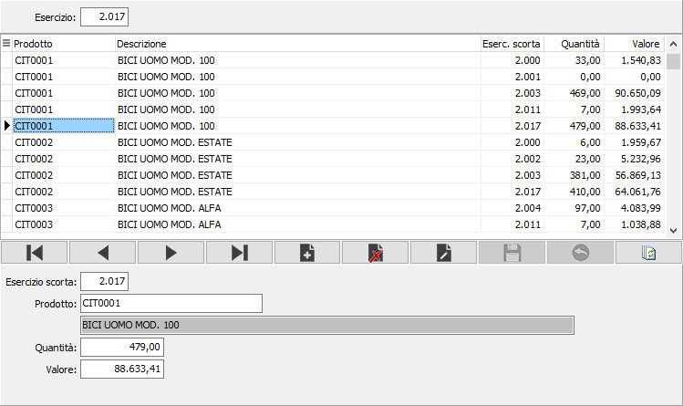

Manutenzione valori
Il programma esegue la manutenzione delle valorizzazioni LIFO, precedentemente elaborate.

ESERCIZIO SCORTA: indica l'esercizio di formazione della scorta.
PRODOTTO: è il codice dell'articolo di magazzino che risulta in scorta. Sul campo è attiva la funzione di ricerca sulla tabella articoli.
QUANTITÀ: indica la quantità relativa alla rimanenza finale dell'esercizio di formazione della scorta.
VALORE: indica il valore relativo alla rimanenza finale dell'esercizio di formazione della scorta.